Dashboards
Dashboards
Introduction
We have spent a good amount of time looking at Cube Views, and this is a common place for many people to start their reporting journey. But we have also learned that this book is about so much more than simply creating Reports; it’s about crafting a User Experience in OneStream. In a way, these things have one big thing in common, they both have the goal of bringing those working with OneStream the information that they need. And while we know there is a prescribed, substantial side to reporting, User Experience challenges us to broaden our goals and add elements of style and interactivity into our design.
Cube Views might have felt more like our cold, hard Reports. Our faithful tool is there to display our (typically financial) information in a professional grid-like format. But we started to see how our Cube Views can be so much more than that, and how they play into our User’s journey. We learned that our Cube Views can play a large role in our data entry, we saw how we can make them more dynamic through parameters, we looked at flexing some formatting muscles, craft interesting Calculations and incorporate them into the Workflow, and we talked about how they can be used to calculate/translate/and consolidate. There are so many other things we can look at when it comes to Cube Views, so don’t let this end your learning journey! If you want to learn more, there is a lot of self-paced training being updated on the Navigator (the OneStream Learning Management System) and the OneStream Documentation.
Let’s not forget what Cube Views are most famous for: their connection to the other areas of the application. If you find any OneStream literature on Cube Views, you will likely have seen them referred to as a “building block”. They adorn this title like a crown because of their ability to elevate elements such as Dashboards, Form Templates, and Spreadsheets. But like any art form, developing certain foundational skills prepares your body and mind to bend certain rules, play on different tactics, and use your creativity to create an experience.
So how can we take our User Experience to the next level? For this, many people turn to Dashboards. This iconic tool can be used to bridge the gap between many items in OneStream. Dashboards are widely regarded as one of the most powerful features within OneStream and for good reason. Their flexibility and plethora of options are what allow you to mix and match Components to create a variety of pages.
Now, I do have to begin this chapter with a bit of a disclaimer. As I am writing this sentence, we are about one month away from releasing 7.4 into the software. With the release of 7.3, we have witnessed a large change to the Dashboards page… the introduction of Workspaces. With the release of 7.4, we are seeing even more features making their way into this area. I will try to keep this as current as possible, but we are undergoing a lot of changes in this realm, so rely on the release notes of each software release to stay current.
Working for a software company, I am always chasing changes. We have a wide variety of clients that all use the software differently, and with the launch of IdeaStream we can see a constant influx of requests that are being incorporated into the software. I think we would all be pretty disappointed if the software wasn’t constantly changing and improving, but let’s deal with the here and now. Hopefully, if you see something else change in the future, you will be excited to snap up the knowledge and apply the things you learned here. You may be asking yourself, “Why should I learn how to build a Dashboard?”, “Who builds Dashboards?”, “How can I get started with
Dashboards?” I hope to answer some of these questions for you, next. So, buckle up! You are on the cusp of really getting your hands dirty in the software!
Dashboards › Introduction
Getting Started
Many people don’t need much convincing when it comes to the value of Dashboards. For a lot of clients, Dashboards were something they first saw during their pre-sales journey and they thought “Yes! I need that at my fingertips!” Or maybe a customer who knew they were going to be an Administrator saw how they could report on data that lived in the Cube (or outside the Cube). This happens with our clients using OneStream Financial Close, Task Manager, People Planning, or other solutions (even BI Blend). Or maybe people were just excited they could create a bespoke landing page for the End-User, or a sophisticated control panel of tasks to kick off or statuses to monitor. Dashboards are great because:
They create excitement, and people want to see them in their applications.
They solve certain reporting requirements.
They cultivate the best User Experience possible.
Dashboards › Introduction › Getting Started
Because They are Exciting!
Clients… this reason applies to you too! Maybe you no longer have an implementation team at your disposal, and someone in your organization really wants a Dashboard. Or maybe you want one for yourself; I won’t judge.
Meanwhile, if you are an Implementor (Consultant), maybe this first reason got you energized. You can’t wait to dramatically crack your knuckles and start weaving together SQL statements and Dashboard Components. It’s in your SOW (Statement of Work) and you want to be the one to do it and proudly show the final design to your client!
A lot of times, the Dashboards we build don’t come to fruition simply because someone asked for them. Many times, they work their way into the build as a creative solution to a requirement. This is the art of the OneStream Application Design, and many times answers are not always obvious; we have to be a little creative. After all, we did say earlier in the book that one of the best ways to be proficient in OneStream is to learn a little bit about each of the tools at your disposal!
Dashboards › Introduction › Getting Started
To Solve Certain Reporting Requirements
The better you get at working with Dashboards (and just operating in OneStream in general), the more comfortable you will be in diagnosing how to solve certain requirements. Here are a few things that should start screaming “You need a Dashboard!”
1. If non-Cube Data needs to be queried/submitted. I will get into this one a little bit later
– because there are other options besides Dashboards – but this really is your best bet.
If an interactive element is required. If you want to create a guided experience for the User that has pop-ups, clickable elements, movable charts, buttons, etc. This will typically involve a Dashboard.
If your existing reporting tools aren’t getting you there. I hate to say anything to knock any other reporting tool, because the beauty of their existence gives you options, but Dashboards give you the most flexibility and allow you to fine-tune every element.
Dashboards › Introduction › Getting Started › To Solve Certain Reporting Requirements
Non-Cube Data
I want to dive into one thing just a bit further: Dashboards can report on non-Cube data. This might be an unfamiliar concept to you, but it is important. Whenever we are looking to report on a mixture of data that lives in the Cube, with data that does not live in the Cube, this is called Analytic Blend. You typically employ this design tactic when some aspect of your reporting causes large sparse data to exist in your Cube (potentially hurting the performance of your application), or you have highly transient metadata that should not be built in the Dimension Library. We won’t go far into the architectural elements of this. If you are curious to learn about the why and how of Analytic Blend, check out the OneStream Foundation Handbook or the Designing and Application course on Navigator.
So, how can we report on data that does not live in the Cube? First, you must know how to find it! I like to break this down by asking, ‘Where else can this data live besides the Cube?’ Commonly, we think of Stage, application solution tables, and tables residing in an external database. Whenever you want to query these elements, the easiest way is within Dashboards. The most common examples of this could be the batch of Reports you see coming with your various solutions like OneStream Financial Close (OFC) or People Planning (PLP).
Now, there are a few exceptions to the rule of ‘You NEED a Dashboard to report on data living outside of the Cube’. There is a dynamic Calculation that you can write that will pull some Stage data into a Cube View. If you didn’t know about this, the functions listed in Figure 10.1 will help you write them. This is a quick way to grab some data, but if you need more flexibility and fanfare, you will find yourself turning to Dashboards.
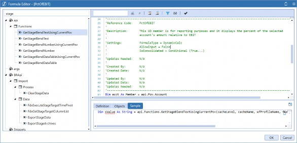
Figure 10.1
The Excel Add-in and Spreadsheet tools can also report on non-Cube Data through Table Views.
Table Views are created using a Spreadsheet Business Rule and will allow you to pull an editable grid of non-Cube data into the Excel Add-in or Spreadsheet tool. I like to think of these as the non-Cube data version of a Quick View; however, the use of the Business Rule makes it feel more like a Dashboard Component.
So, if you have the requirement of pulling non-Cube Data into Reports, Dashboards should be your go-to. While it’s not your only option, the ability to fine-tune every aspect makes Dashboards an easy choice for many designers.
Dashboards › Introduction › Getting Started
To Cultivate the Best User Experience Possible
This book is about User Experience, and we have talked a lot about reporting. Dashboards can form a beautiful partnership with the OneStream Workflow to really add some pizzazz to their Close or Planning process.
Data Entry. I always turn to a Dashboard if I would like to incorporate some sort of User-controlled Calculation in the data entry process. This is common with Planning Calculations, for example. Of course, there are other options, like using a pre-process Workflow task or an Extender Business Rule, but people love to push buttons. If you need to submit non-Cube data, you will need a Dashboard to do this (this is how the MarketPlace solutions are created!).
Analysis. Many times, people incorporate Dashboards into the analysis sections of their Workflow. This is a great tool to help your User along the way. You could show them thresholds they are about to break, quick ratios, or even a video on how to complete their Close process through a Dashboard.
This isn’t a recommendation or a warning, but I have known people to rely more on Dashboards than the Workflow itself. You should not be persuaded for or against it; it’s simply an option on how any Workflow and Dashboard partnership can be formed. We would typically see this on a Planning project, but Consolidation projects may turn to another MarketPlace solution called Task Manager to accomplish a similar effect. This allows your Users to see their required tasks in a fancy Dashboard that is clickable and which will navigate them to the appropriate location in OneStream for task completion. Many people like this solution for its flexibility and stylish appearance, as well as its ability to provide additional process orchestration and visibility.
What really drives the User Experience that Dashboards can create, though, is the flexibility. Dashboards are essentially a blank canvas with which you can tailor OneStream specifically to any customer. Basically, you can show your Users exactly what they need to see. On top of this, if you create your Dashboards wisely, they can be created and maintained by your Finance Administrators or Power Users.
Dashboards › Introduction › Getting Started
Who Should Be Building Dashboards?
This is an interesting question because I think most people have the capacity to build a halfway decent Dashboard; no one should be afraid to jump in and be uncomfortable for a little time.
Some Dashboards can be extremely simple. They do not have to have a hundred Components, complex rules, or various items interacting with one another. We turn to this tool to solve a specific use case for our Users. Starting with a plan and a well-thought-out design is something that everyone can do, and you may be surprised by a simple solution.
| Tip: Remember to always think of the User and how they want to interact with what you have created. |
Okay, but what if we can’t come up with a simple solution without sacrificing the User Experience? Throughout my career, I have encountered many people who have better technical backgrounds than myself and who create some really impressive Dashboards. They truly shine in this category and go on to develop beautiful solutions that you may see offered on the Solution Exchange! We often refer to these people as “Solution Developers”. Many of these people work within OneStream, but many of them are our clients and partners.
In this book, we are not planning to deep dive on how to build solutions, but rather how to get your feet wet and start to see the art of the possible. So, what skills does it take to build Dashboards? If you are new to Dashboards, here are four areas you should consider being able to accomplish:
Breaking down the anatomy of a Workspace.
Creating at least five Dashboard Components.
Building each of the Data Adapter Types.
Working with Embedded Dashboards.
Dashboards › Introduction
Breaking Down Workspaces
First and foremost, where do we build Dashboards? You may notice there are two types of Dashboards: Application and System Dashboards. We will be talking about Application Dashboards as these are the most common, but the pages are very similar and if you can build one type, you can build the other. Application Dashboards are built in the Dashboards page on the Application tab, while System Dashboards are built in the Dashboards page on the System tab. If you are curious why there are two pages, System Dashboards are for reporting on more general system information such as security or User activity.
Let’s get to the Application Dashboards page, and then we can start to break down Workspaces.
Dashboards › Introduction › Breaking Down Workspaces
Workspaces
As I write, we are on the precipice of changing how Dashboards are created and structured. The way that we used to explain the breakdown of Dashboards was to start with the Dashboard Maintenance Unit, but the release of 7.3 marks the end of this era, with Dashboard Maintenance Units being the top node. Now, there is a new proverbial sheriff in town, Workspaces.
As we move into 7.4, the Dashboard page looks something like Figure 10.2.
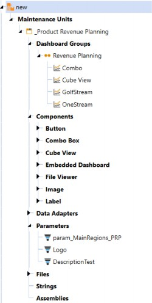
Figure 10.2
Looking at Figure 10.2, Workspaces sit at the top of your structure and hold your Dashboard Maintenance Units, Dashboard Groups, Components, data adapters, parameters, files, strings, and assemblies. Workspaces facilitate community development by providing an isolated environment for developers to segregate and organize Dashboard objects. They are the new foundation for Dashboards and will continue to evolve into the framework that encapsulates the artifacts needed to develop business solutions.
Workspaces were created to provide the following benefits:
Isolation between Dashboards. This allows developers to work on the same Dashboard in a sandbox environment.
Greater flexibility for developers. Better control amongst team members for changes, testing, and overall design.
They allow same-name items to exist in separate Workspaces. This reduces the likelihood of naming conflicts, especially when importing/exporting them from other applications or sources.
You can share Workspace objects with other Workspaces. This provides the opportunity to re-use objects rather than having to copy them.
You may have noticed that there is a Default Workspace. This is where all existing Dashboards – prior to 7.3 – were created if you were using an older version of OneStream and recently upgraded. This is a system-controlled Workspace, and if there is no need for multiple Workspaces, you can use this for all Dashboard storage and creation. Don’t worry; you can easily move items out of this Workspace using copy/paste functionality. We do have one early recommendation, though, and that is to hold any universal parameters in the Default Workspace.
To create a new Workspace, locate the highlighted icon in the toolbar.
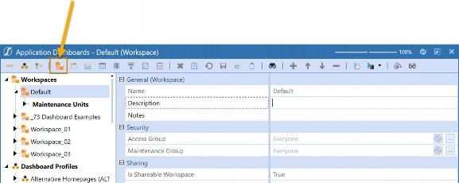
Figure 10.3
Really, the only property worth debating is whether this is a shareable Workspace or not. If you select True, other Workspaces can reference the objects in this Workspace. This property is basically acting as the security guard at the front door of all the items in the Workspace. The default Workspace always has this property set to True.
The second property, Shared Workspace Names, is where you can key in a comma-delimited list of Workspaces that this Workspace can take objects from. This means that each of these Workspaces would need to have the is Shareable Workspace property set to True.
Workspaces will continue to have evolving benefits as we see more releases of the software. Currently, they relieve the maintenance of requiring uniquely-named items across other Workspaces. You can also share items with other Workspaces. This may come in handy for more complex solutions, but anyone can take advantage of these new features.
Dashboards › Introduction › Breaking Down Workspaces
Dashboard Groups and Profiles
Let’s zoom in, first, on Dashboard Groups in Figure 10.4.
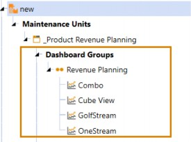
Figure 10.4
Dashboards themselves are always housed in Dashboard Groups. If you are experiencing a bit of déjà vu, you are not crazy; Dashboards – like Transformation Rules, Cube Views, Form Templates, and Journal Templates – have the same concept of groups and profiles. Dashboard Groups reside with the Dashboard Maintenance Unit, and then the respective Dashboard Groups are added to the Dashboard profiles outside the maintenance unit. Like everything else, the profile itself is what gets brought to the User through OnePlace.
This is an important concept because you use the various pieces within the Dashboard Maintenance Unit to create the Dashboards, which live in the groups, but they must be added to a profile to leave this page. If you are building one simple Dashboard, this may seem redundant, but as we increase in complexity and even start adding Dashboards to Dashboards, this will help you stay organized.
Maybe I can clarify this with another food-related metaphor (And it’s not just because I have no real hobbies besides eating). Let’s say you are making a delicious Chicken Parmigiana (I am American, so I say “Chicken Parm” with a strong midwestern accent). Think of the final dish as your Dashboard, the plate you serve it on as your Dashboard Group (because you can’t huck loose pieces of chicken at your guests), your Dashboard profile is the table you serve it on. Your kitchen counter – with all your ingredients and tools nicely laid out – is Workspace.
Dashboards › Introduction › Breaking Down Workspaces
Components
Let’s zoom in once again, but this time on Dashboard Components.
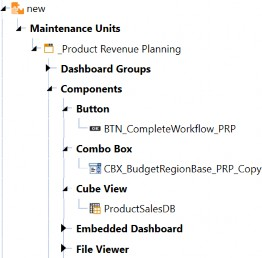
Figure 10.5
Figure 10.5 shows a few Components under our Workspace. They are any item that you can visually see on your final Dashboard. They are your charts, pivot grids, buttons, combo boxes, video players, Reports, and the list goes on and on.
In the context of our Chicken Parm, these would be the main ingredients that you can see on the plate: your chicken, your cheese, and your sauce. Some of these Components are as substantial as your chicken and might be something front and center like a Cube View, chart, or pivot grid, while your cheese is a supporting character and might be a combo box where you choose a Time Member or a button that runs a Calculation. Some people would throw a fit if you served them chicken parm without cheese; yes, I am one of those people.
Dashboards › Introduction › Breaking Down Workspaces
Data Adapters, Parameters, and Files
Your data adapters, parameters, files, and strings are the unsung heroes of Dashboards. You may not be able to see them, but they bring your various Components to life.
If we go back to our cooking metaphor, these are the ingredients that you don’t immediately see on the plate, but which you need! Maybe your chicken is breaded, so these are the breadcrumbs, egg, and flour. If you make your own sauce, this could be your garlic, olive oil, tomatoes, garlic, etc.
Heck, you can even think of these items like your salt and pepper.
Dashboards › Introduction › Breaking Down Workspaces › Data Adapters, Parameters, and Files
Data Adapter
Let’s start with a data adapter. These are used to flood your Components with data, either from the Cube or application/external tables. Components like pivot grids, Reports, charts, BI Viewers, grids, and Data Explorers – just to name a few – will all require a data adapter to function. You rarely escape a Dashboard build without having to build a data adapter. I personally like to advise people to put a lot of work into their data adapter(s) to ease the amount of configuration on the Component. If you buy good quality ingredients, your food will taste better!
Dashboards › Introduction › Breaking Down Workspaces › Data Adapters, Parameters, and Files
Parameters
We have already talked about parameters extensively, but they can be used throughout the entire OneStream application. Commonly, they are created to be added to combo box Components, but they often get incorporated into data adapters to create selectable elements in the Dashboard.
Dashboards › Introduction › Breaking Down Workspaces › Data Adapters, Parameters, and Files
Files
Files may not be used as commonly, but if you are using a Book Viewer (for OneStream Report Books), Spreadsheet, or File Viewer Component, you will likely need some files! Even if this is not the case, you will likely have a nice logo or icon on a button to jazz up the appearance of your Dashboard. Files can be functional or more decorative items.
Dashboards › Introduction › Breaking Down Workspaces › Data Adapters, Parameters, and Files
Strings
I won’t get into strings too much because we usually see them being referenced in Cube Views. I like to think of strings as something to be prompted – based on User culture properties. This creates the effect of having multiple languages in your application.
For example, if you have multiple cultures enabled in your application for different languages, you will be able to provide a different Member description for each of them in the Dimension Library. But where else could we apply this? That is where your strings come in handy (they are found on the Dashboards page). The common example we see is to allow a different page caption to be visible, based on the User’s culture. To see how to do this, refer to the Design and Reference guide under the section “Reference Alias Via XFString”.
Dashboards › Introduction › Breaking Down Workspaces › Data Adapters, Parameters, and Files
Assemblies
Another item I will just touch on is assemblies. Assemblies were released in 7.4, and they grant you the ability to write rules directly in the Dashboards page. You no longer need to travel to the Business Rules page if your Dashboard requires rules. You can choose to write a Dashboard data set, XFBRstring, Spreadsheet, or Dashboard Extender Rule. These can be written in C# or Visual Basic.
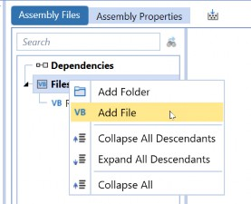
Tip: The Assemblies node relies on right-clicking to get things going. Once you have added an assembly to your Workspace, right-click and add a file to start writing your rule. Figure 10.6 |
Dashboards › Introduction
Be Able to Build at least Five (or Ten) Components
One of the things I said everyone should know is how to build around ten Dashboard Components proficiently. There are more than that, but this will be a great way to get yourself well-rounded. I will give you my top ten based on what I have found to be the most helpful in my career; the top five are the most important.
Buttons
Combo Boxes
Grid View
Charts (advanced)
Cube View
If you are up for the challenge, here are the next five Components I recommend trying:
Labels: Show a nice title on your Dashboard. Labels can offer so much; you can display dynamic items like parameters, substitution variables, and even query data.
Book Viewer: Unpopular opinion, maybe, but everyone should know this. A Book Viewer will display any of the items created in the Books page in OneStream. They can be stored in the File Explorer, emailed out through the Parcel Service, or presented in Dashboards using this Component.
BI Viewer: Our most dynamic Dashboard Component. This Component embodies the common Dashboard experience with interactions and drag and drop. You can use charts, pivot grids, data grids, and much more… all within this one Component.
Report: A great way to show non-Cube data in a polished format. The Report Designer makes this Component easy to use and you can incorporate them into Books. I really think everyone should be able to be able to build one of these Components; there is a great short lesson in The Navigator on how.
Pivot Grid: An interactive way to query data for your Users. They can choose rows, columns, filters, and even some formatting. Plus, they are very easy to set up. Large data pivot grids are similar and are great for… you guessed it… large amounts of data. They do have less formatting functionality, though.
Dashboards › Introduction › Be Able to Build at least Five (or Ten) Components
Getting Started
Creating a Dashboard Component will typically take a little love because you have so many options. Figure 10.7 shows you the icon that you need to click to create a Component. From here, you will get a pop-up window for all the Components you can create. You can search for your Component or scroll through the list.
Once you create the Component, notice the running list of the types of Components you have. For example, in 10.7, I have at least one BI Viewer, Embedded Dashboard, and Pivot Grid Component. This is an excellent way to stay organized within your maintenance units and quickly see what you have created.
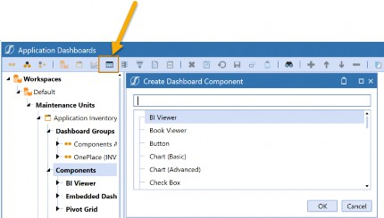
Figure 10.7
There are a wide number of Component properties that you can configure. You will notice that many of these properties overlap based on how similar some of them are. We are going to talk about some common favorites.
If you ever want to try making a Component, follow the steps illustrated, and set up the necessary properties. Then, I would recommend adding your Component(s) – one at a time – to a Dashboard to see how you did. This will help you get comfortable building Components and simplify any troubleshooting you need to perform.
To do this, you will need:
A Workspace created.
At least one Dashboard Maintenance Unit added.
A Dashboard Group under the Dashboard Maintenance Unit.
One Dashboard under the Dashboard Group.
Figure 10.8 shows an example of a Workspace I created to test a button. This would be great if I had never created a button before and wanted some practice. If you didn’t know this, you can add Components to your Dashboard by clicking the highlighted + sign.
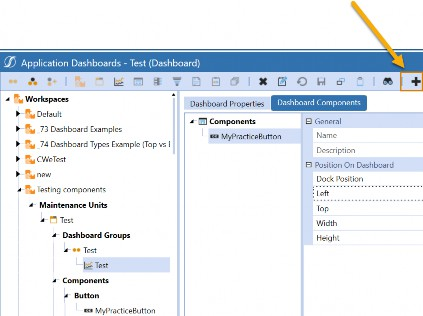
Figure 10.8
Dashboards › Introduction › Be Able to Build at least Five (or Ten) Components
Buttons
Buttons are great for kicking off data management jobs, navigating to another page (or URL), or launching other Dashboards as a dialog box. My most common use case for them is running Custom Calculate Business Rules within Planning Forms. I often incorporate a button that can run a Data Management Sequence into many Planning implementations, as it is a great way to create an interactive Form that allows my Users to run rules on only the slice of data they need… when they need it. This reduces any reliance on automation or an Administrator when it comes to running rules, and gives my User what they need at their fingertips.
Figure 10.9 shows an example of a Dashboard I might be talking about. The button in question is the Calculate Revenue button at the top-right of the screen.
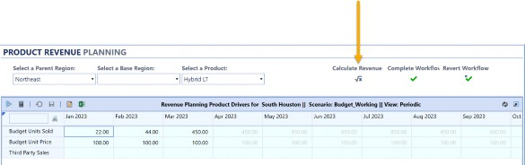
Figure 10.9
Let’s peel back the curtain. Buttons are not that hard to set up, and I will point out the key properties you need here. I have collapsed the ones that are not as commonly used, in Figure 10.10.
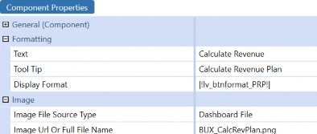
Figure 10.10
Text: This property is what I use to display – directly to the User – what the button will do. You can see in Figure 10.10 the text Calculate Revenue is displayed.
Tool Tip: Users can hover over tool tips for clues or more information. I have a tool tip here, but you may not always need this (unless, of course, it actually helps the User). You cannot see this in Figure 10.10.
Display Format: I am using a Literal Value Parameter. You can open this window to provide any necessary formatting for your button.
Image File Source Type: You can see in Figure 10.10 that there is an image displayed for my button. This property tells me where this image is stored in OneStream. I like to store images in the Dashboard files section, so I can stay organized in my Workspace. But you can store them elsewhere.
Image URL or Full File Name: The name of the image file I am referencing in this button. This .png was uploaded to the Dashboard Files section.
Okay, now your button will look nice on the page. But will it work? Well… no. There is one other important section we need to configure: actions. Action settings are available with many Dashboard Components. Conveniently, if you learn how to set them up for a button, you can apply the same logic to combo boxes, charts, Cube Views, or any other Component that has them.
In this case, I want my button to be able to run a Custom Calculate Business Rule. I will run this rule through a Data Management Sequence. Figure 10.11 shows how my actions are configured.
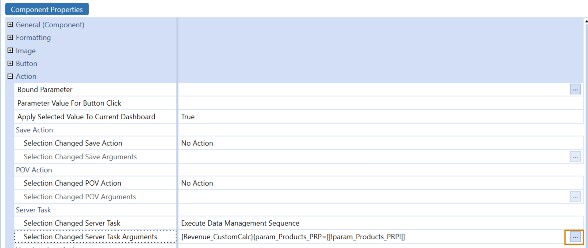
Figure 10.11
The first thing I needed to do was set the Selection Changed Server Task to Execute Data Management Sequence. For any Custom Calculate Finance Business Rules, this will be what you need to choose.
The next thing is to configure the Selection Changed Server Task Arguments. You may want to click the highlighted ellipses icon to help you out. This will give you the syntax that this property is expecting. The first item in the curly braces is the name of my data management sequence Revenue_CustomCalc and the second item is any parameters that I need to resolve. You may not have these, but in this case I am prompting my Users to choose a product. This may look strange, but since I would still like this prompt to occur, I am setting my parameter name equal to itself. I could hardcode the value here if I didn’t want my User to choose this, but I am going to have them choose it through a combo box.
That is all you need. I would test this out by running my button on a Dashboard alone to see if it works. If I get an error, I like to test this by running the data management sequence from the Data Management page, since you can isolate where something is wrong with your rule or if you just configured the button incorrectly.
Dashboards › Introduction › Be Able to Build at least Five (or Ten) Components
Combo Boxes
Combo boxes are the simplest way to make your Dashboard dynamic. Instead of parameter prompts, resolve parameters through an attractive combo box. Let’s look at the same example Dashboard, once more, in Figure 10.12. This time, we are looking at the combo boxes across the top left of the screen (asking us to select a Parent Region, Base Region, and a Product).
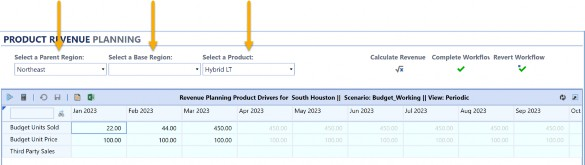
Figure 10.12
Now let’s look at some of the properties we want to set up in our combo box. Notice that we have the same first three – Text, Tool Tip, and Display Format – as we had with buttons.
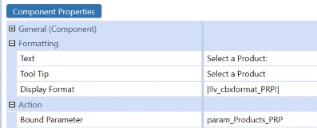
Figure 10.13
I won’t go into these again, but the main property you will want to configure is the Bound Parameter property. Here I place the name (notice it is not in pipes and exclamation points) of the parameter that I need to fill my combo box with; in other words, the selections for my User to pick from. This means I will need to have a parameter already made for this Component to work. Luckily, we discussed how to do this in previous chapters. Member List and Delimited List parameters work best here.
Once again, we have some actions that we need to fill out. This might be surprising since, unlike our buttons, we don’t need to run a rule or show a page. However, we will want to refresh any items on our Dashboard that may need to change, based on our User’s selection. This way, our User doesn’t have to refresh their own page intuitively.
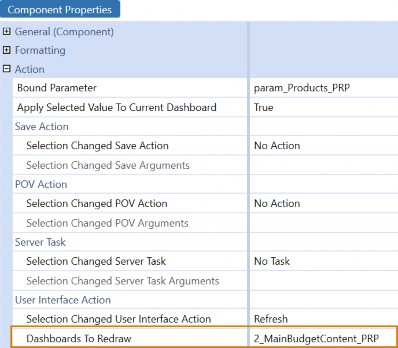
Figure 10.14
Figure 10.14 illustrates how I have this set up. I have chosen my User Interface Action to be Refresh, and the Dashboards To Redraw is the name of the Dashboard I have created. You can choose to refresh the entire Dashboard, or if you were clever enough to nest Dashboards within Dashboards, you may select one of them. You DO NOT choose a Component here; it is the actual Dashboard you choose.
Dashboards › Introduction › Be Able to Build at least Five (or Ten) Components
Grid View
I don’t see a lot of people using these Components, but they are a really easy way to query non-Cube data. We use them extensively in the Analytic Blend course because it allows people to see their results in something interactive and simple to create. Users can even filter and sort the data, making this an intuitive User Experience.
In the spirit of how I am doing these other Components, I am only going to explain what you need to get started. The truth is your grid Component has a lot of formatting properties that you may want to tinker with, and you can even apply some actions. For the sake of simply displaying data, you can leave many of these properties to their default settings. Indeed, the only thing you really NEED to get your Grid View working is a data adapter. Figure 10.15 will show you how to do this in three easy steps:
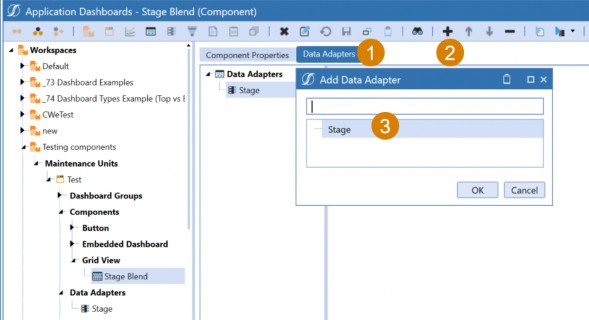
Figure 10.15
Choose the Data Adapters tab, then click the + sign and add the data adapter you would like to bring your Component to life. This is the first Component we have seen that requires a data adapter, but if you see that tab in your Component’s properties, that is a good indicator that you might want to get one ready.
And if you are curious about what one of these looks like, here is Figure 10.16 to help you.
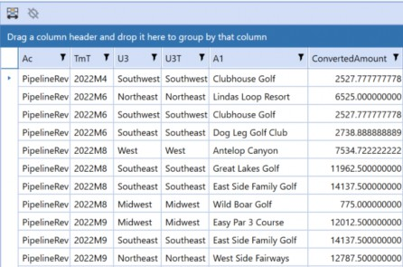
Figure 10.16
This is what happens if you do no formatting whatsoever to it. Notice that the filtering properties are still intact, and I am displaying selected columns for my Stage and Attribute tables.
I am querying a view that many people do not know about in OneStream called vStageSourceAndTargetDataWithAttributes. If you are a fan of SQL queries and need to grab Stage data, this is a great view, and it comes with every OneStream implementation.
In this figure, I am displaying my Source Account (column Ac), my Target Time (column TmT), my Source UD3 (column U3), my Target UD3 (column U3T), my First Attribute (column A1), and my Amount (column ConvertedAmount).
Dashboards › Introduction › Be Able to Build at least Five (or Ten) Components
Chart (Advanced)
Everyone should know how to make one pretty chart. They are in all your sales demos! Don’t let the number of properties fool you; they are much easier to craft than you think. Figure 10.17 shows an advanced chart that I have built.
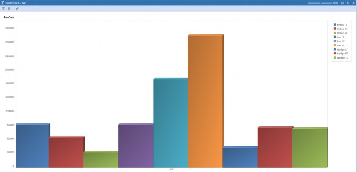
Figure 10.17
It’s not too fancy, and really takes next to nothing to set up. My chart simply shows me revenue by product for one year.
I wanted to keep this chart as simple as possible because the number of properties on this Component can intimidate a lot of people. My advice is to try one thing at a time. Figure 10.18 shows you the only two things that I changed from their default settings. I chose my type of chart (which is a bar chart) and I added a simple Cube View data adapter, which we already learned how to do with the prior Component.
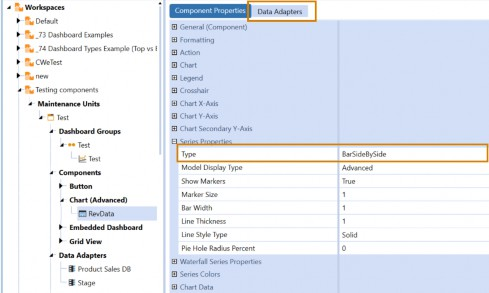
Figure 10.18
I kept all the other properties collapsed (but in view) on purpose, so you could see exactly how much you can toggle for more advanced charts. My tip, however, is to start small; just get it working. Many people miss this on advanced charts, but this particular Component can also be incorporated into Report Books and Extensible Documents. You can incorporate them just as easily as you would a Cube View!
Dashboards › Introduction › Be Able to Build at least Five (or Ten) Components
Cube View
Cube View Components could not be easier to make, and they are a staple in many people’s Dashboards. They are extremely helpful if you are creating a Dashboard for data collection, but really, they are just a simple way to display data. The great thing about them is that they are performant, and you keep all your great Cube View functionality – like drill-down – when referencing this Component. Also, you can format the Data Explorer of your Cube View heavily, to the point where you might not even know that a Cube View is on your page.
I’ll bring back our familiar Dashboard in Figure 10.19. My Cube View is the large blue grid.
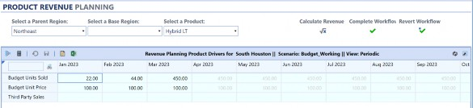
Figure 10.19
Now, this Component is easy to configure; you don’t need a data adapter or anything to get it working. Check out Figure 10.20 to see what I am talking about:
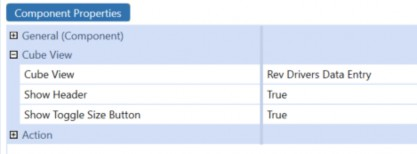
Figure 10.20
See? It could not be any easier! You just need to add a Cube View to get this working.
| Note: For a Cube View to be visible on the Dashboards page, it needs to be added to a Cube View Profile with the appropriate visibility settings defined. |
You will also notice that our actions are available here as well. That means our Cube Views can be more interactive than we originally thought. A common use case I see for this is if I want to have a Cube View and a Grid View Component displayed side by side in a Dashboard. If the User selects a cell in the Cube View, the Grid View Component will update to display the Stage data behind that cell. We create that exact Dashboard in the Level 3 Dashboards course.
Dashboards › Introduction
Building Different Types of Data Adapters
In the prior section, we saw two Components that required a data adapter for them to work properly. There are certainly more Components out there that require a data adapter, so being armed with the ability to create each type is pivotal to your Dashboard career. There are five types of data adapters:
Cube View
Cube View MD
Method
SQL
BI Blend
It would be nice if you were able to build all five, but really I would settle for Cube View, Cube View MD, and SQL. BI Blend is most helpful only if you have BI Blend in your application.
Realistically, you could also recreate this same query with a SQL data adapter.
On top of that, Method data adapters can also be done with a SQL data adapter. However, one caveat I will make is that Business Rule Method data adapters are extremely important if you are incorporating rules into your Dashboard. I will show you how to set these up because this is often required to take your Dashboard to the next level.
The different Data Adapter Types are used to bring different styles of data to your Dashboard. Remember, one of the key reasons why we use Dashboards is to query Cube and non-Cube data. So being well-versed in data adapters is fundamental to your success as a Dashboard builder.
Dashboards › Introduction › Building Different Types of Data Adapters
Cube View
Your Cube View data adapter is very easy to set up and will typically be used with Components such as charts (advanced), charts (basic), or Data Explorer Reports. You can use them for much more, but I will give you an additional option that might prove valuable. Your Cube View Component does not require a data adapter at all. If you are simply adding a Cube View to a Dashboard, you can move straight to the Component.
How can we get started with creating a Cube View data adapter? Well, easily enough, Figure 10.21 shows you the only two properties you really need to update. The Command Type is where you decide your Data Adapter Type, so we have chosen Cube View. Notice that – when you choose your Command Type – this will update the subsequent properties you need. The only other crucial property is the Cube View we need to assign, and you can see that my Cube View Name is Product Sales DB.
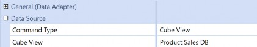
Figure 10.21
I would recommend pausing here to run this data adapter and view your results before evaluating the other properties. It is important to preview data adapters before moving on. Figure 10.22 shows my results.
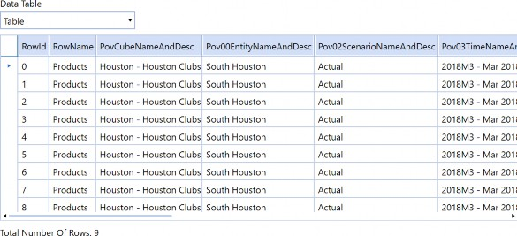
Figure 10.22
This is hard to depict, but even though I only have nine rows of data, there are many columns present. When you use a Cube View data adapter, the fields are essentially the items within the Cube View. You can see the columns are pulling in my row name and the elements of the POV and – if I kept scrolling to the right – you would see the Components in the row as well as the data points for every single column.
This is what makes the Cube View data adapter great with the Components I listed before, but (maybe) not so much for other ones. I usually try to recommend the Cube View MD data adapter for Components like BI Viewer, large data pivot grids, and pivot grids if you require data that resides in the Cube. This is because these Components rely heavily on you, or even your End-User, at times, placing their appropriate fields into the spaces within these Components.
Pov00EntityNameAndDesc will not typically mean a lot to anyone.
I won’t leave you hanging on the other properties. You likely won’t need to alter them, but you may want to understand them. This series of True/False properties is here to allow you to activate certain aspects of the Cube View. We saw PovCubeNameAndDesc in Figure 10.22; notice that the property Include Cube POV is set to True in Figure 10.23. We could turn off the POV Members that we don’t want to see from the Cube View POV. We can also turn on the Cube View subtitles in the headers or footers of the Cube View here. Essentially, you can choose to simplify or add more items to your resulting table.
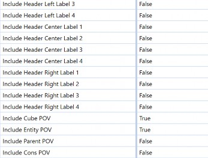
Figure 10.23
You likely won’t need the headers. I had one situation – back in my consulting career – where I enabled these properties because I was fine-tuning one of my Cube Views with the Report Designer. I needed to enable the headers in my data adapter because I was using substitution variables to make them dynamic. Therefore, I needed my data adapter to flood my Report with the appropriate header, as opposed to me hardcoding in things like the Time period, Entity, or Product used to pull the data in the Report. Since then, many updates have come into the Cube Views page, and those use cases are thinning out, but they still do happen.
Dashboards › Introduction › Building Different Types of Data Adapters
Cube View MD
I loved it when this data adapter came out. It has been a lifesaver when building Reports for Analytic Blend use cases, where I need to grab existing Cube data effortlessly. Let’s break down the name of this data adapter. Cube View suggests you are going to start the build of this data adapter like the one we just discussed (and you would be correct), but MD stands for Multi-Dimensional. We can see this reflected in the output of this data adapter in Figure 10.24.
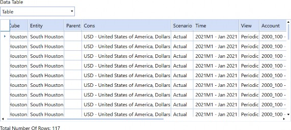
Figure 10.24
If we check out the columns, we see some familiar faces. Each of our Dimensions is visible for each data point. If you scrolled to the right, despite this Cube View having multiple columns, there will be only one Amount. Figure 10.25 is going to show you why this data adapter works so well with certain Components.
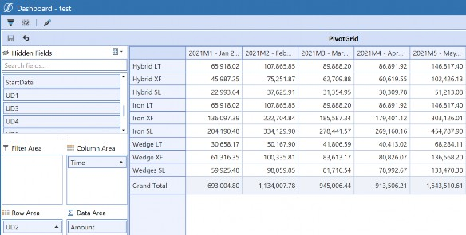
Figure 10.25
Above is an example of our Cube View MD data adapter and a pivot grid. This pivot grid has had nothing special done to its properties besides adding the data adapter. You can see that I get all my Dimensions displayed. So as a User, I was able to drag my Time to the columns area, my UD2 to my rows, and my Amount to the data area. This was all done easily and in a matter of seconds, thanks to my easy-to-interpret Cube View MD data adapter.
There are some cool things that you can add to your Cube View MD data adapter as well. I will point out two neat property sections: Loop Parameters and Dimensions To Level.
Loop Parameters allow me to use the Member Filter Builder to add additional Members to my data adapter that may not be present in my Cube View. In Figure 10.26, you can see that I have added V#YTD and V#Periodic into my Cube View.
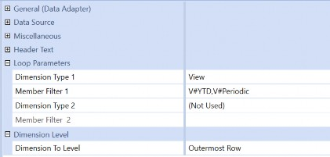
Figure 10.26
Dimension To Level is something exciting. You can pick the outermost row, outermost column, or both. This is handy if your Cube View is pulling an expansion with multiple levels. If this is enabled, you can add fields to your data adapter to denote which level is in the hierarchy being pulled. This is a little hard to explain, so let’s look at the results in our pivot grid in Figure 10.27.
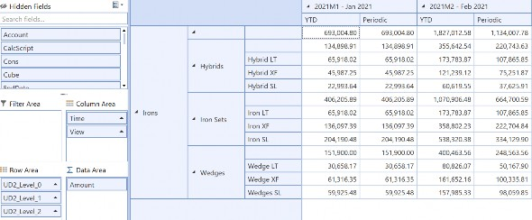
Figure 10.27
Notice in the Row Area, instead of just placing UD2 here, I now can place UD2_Level_0, UD2_Level_1, and UD2_Level_2.
If we look to the grid:
level 0 is displaying the top level UD2 Dimension displayed in my hierarchy
level 1 is the Child under that
and level 2 is the Children under that
The Cube View MD data adapter will decipher how many levels are present and split out the fields appropriately. This gives me the ability to create a tree-like view in my Dashboards and, therefore, enhance my User Experience. It may take a moment to get used to the new column names, but you can’t argue with those results.
Dashboards › Introduction › Building Different Types of Data Adapters
SQL
Next, I am going to hop to the SQL data adapter. This is a staple in our data adapters and the most flexible way to query data that does not reside in the Cube. This is where we may lose a few people as not everyone has a background in SQL, but there is a lot of great documentation out there that can help you out, including the Microsoft website.
But let’s stick with our theme and continue to break down our necessary properties in Figure 10.28. As you can see, besides the SQL Query itself, there is not much to it. You just decide SQL as your Command Type and the location of your database. Application will be great for querying all your application tables. You may also choose Framework, although it is a little less common. If you have incorporated BI Blend into your application, you must choose External as your Database location.
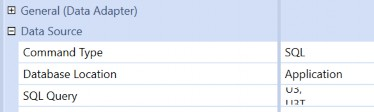
Figure 10.28
After that, you are ready to write your query. If you are in a Dev environment and you are struggling with learning SQL, you can start with a simple SELECT * FROM YourTableName. This will give you all the records in each table. You probably don’t want to make a habit of doing this, as this can be a lengthy query. Homing in as much as possible will ensure better performance. Calling out specific column names (or fields) and fine-tuning with where clauses will help. Figure
10.29 shows the simple SQL Query I wrote to pull Stage data.
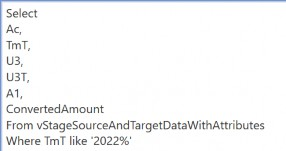
Figure 10.29
This code selects a list of my required fields from my view with Source, Target, and Attribute Dimensions where the Target Time Member starts with 2022. You can, of course, add parameters. There are many ways to write a sophisticated SQL query, but if you know your table name, you can figure it out.
Speaking of which, if you have no idea what any of the OneStream table names are, I recommend going to the Database page found on the System tab. The list of Application and System database tables can be found here; if you click on them, you can preview the fields available.
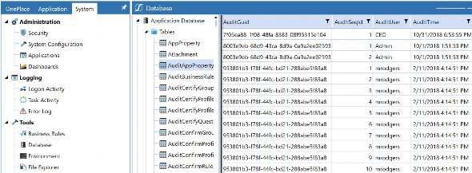
Figure 10.30
The only thing you will not find here are the views that come with OneStream, which is why I wanted to include the one I find the most helpful for pulling Stage data in Figure 10.29. In turn, you will not find anything in your external databases, so that means no BI Blend. However, you can easily pull the list of BI Blend Table names from the OneStream Workflow or through the StageBiBlendInformation table. This table is shown in Figure 10.31.
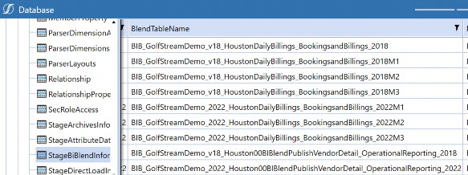
Figure 10.31
Dashboards › Introduction › Building Different Types of Data Adapters
BI Blend
I am partial to using a SQL data adapter whenever I query BI Blend data, mostly because I like the flexibility that this can provide. However, the BI Blend data adapter was created to facilitate the ability to pull data from BI Blend if you are uncomfortable writing SQL queries. Instead of a scary query, you just fill out the necessary properties.
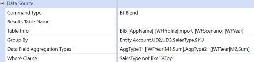
Figure 10.32
Figure 10.32 shows the properties that you may want to fill out. I took it a step forward and parameterized this query to make it more dynamic.
First, you need your Table Info. There is an ellipsis here that will pull the list of potential tables to help you out. I just placed some substitution variables to make this more dynamic. Your Group By property should be filled out with the fields you wish to include. Then, Data Field Aggregation Types will be the amounts that you need.
| Note: There is a specific syntax expected here, and you can hover over the property to get the tool tip if you are worried you will not remember it. |
I also added substitution variables to my amounts to make them dynamic. And finally, you can add a Where clause to filter your data down and improve performance. That last one is optional.
Dashboards › Introduction › Building Different Types of Data Adapters
Method
We covered this one in the parameters section, so I won’t go back into it. Method data adapters are another option if you are uncomfortable writing a SQL query. They will help you with common queries for your Application and System database tables.
However, there is one very specific use case where you will require a Method data adapter. That is if you are using a Business Rule – usually a Dashboard data set – to populate your data. We can see an example of this Method query in Figure 10.33.
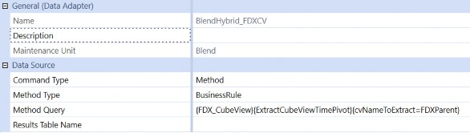
Figure 10.33
The syntax for this Method query is
{BusinessRuleName}{DataSetName}{Parameter1=Value, Parameter2=Value}. You may not have any parameters. Remember, if you do not know the syntax of the Method Type you have selected, do not just fill the item out and run the data adapter. It will return an error with the expected syntax for MOST Method types. If not, the syntax is also available in the OneStream Design and Reference Guide. Currently, this can be found on the Data Adapters page (you might have to scroll).
Dashboards › Introduction
Embedding Dashboards
We have learned a lot of pieces about Dashboards, but the trick of setting one up that works nicely lies in running the Dashboard in design mode. This is a great way to learn how to troubleshoot Dashboards that maybe you did not build. As we move into embedding Dashboards into other Dashboards, things might start to get more complicated, so we want to think of this tactic as not something that should scare us, but something that enables us to break down a complicated solution into small pieces. Then (food metaphor alert!), we just eat them one bite at a time.
Dashboards › Introduction › Embedding Dashboards
Running a Dashboard in Design Mode
If you ever meet someone who claims to know a little of a language, and ask them how much exactly, they might reply, “It’s hard for me to speak it, but I can understand it.” Once you learn enough pieces and recognize certain words, you can start to understand others. The more you listen, the more you can pick up, but the hardest part is speaking. You find yourself stalling and searching for the right grammatical structure or conjugation. But the only way to get good is to keep trying.
I think of unwinding complex Dashboards through the Dashboard design mode as being able to understand a language. You might not jump in and build a full, complex page from scratch just yet, but you can pull out the parts that you need and tinker with them. If you know how to make parameters, data adapters, and a few Components in their simplest form, that is – in a way – equivalent to learning basic vocab terms and sentence structures. It will help you to start troubleshooting because you have a foundation. The more examples you are exposed to, and the more Dashboards you see, the closer you will get to becoming fluent.
Let’s keep this in mind and learn how to run our Dashboard in design mode (if you don’t already). If you are in your Dashboards page, notice that there are two icons at the top of your screen that allow you to preview a given Dashboard. You will want to click the icon I have highlighted in Figure 10.34 to run this Dashboard in design mode.
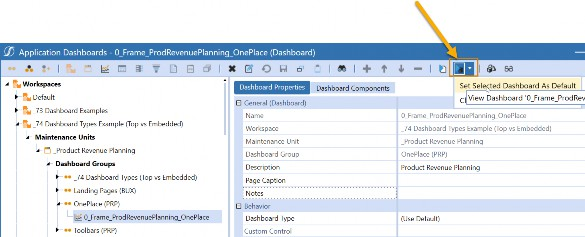
Figure 10.34
You will also notice that there is a small arrow that gives you the option to Set Selected Dashboard As Default. Click this item first to save the selected Dashboard as the one you would like to run in design mode. Why? We have learned that you may be jumping around quite a bit in the Dashboards page, so isn’t it handy that you could simply click this icon while you make changes in various Components and just see your Dashboard in preview mode?
Let’s check out the simple Dashboard we have been running throughout this chapter in the design mode. In Figure 10.35, on the left side of your screen, is your Dashboard displayed in a hierarchical format. You’ll notice that we have many Dashboards within Dashboards in this example. That is a concept called Embedding Components, and we will cover that in the next section.
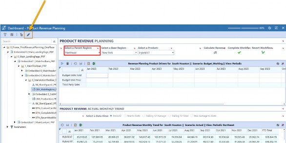
Figure 10.35
If I am on a particular item in the Dashboard hierarchy, the item will be selected with a red box (I didn’t draw that in, above), and it allows me to see which item links to which Dashboard or Component. You can also click on one of the little red tick marks above each of the objects, and it will take you to the item in the hierarchy. Basically, you now can point at something and say, “What is that? I want to change it.”
One last thing, there is a little pencil icon (highlighted in yellow and with an arrow pointing at it, in Figure 10.35). If you click this, it will take you to whichever item you selected in edit mode.
The design mode is great if you would like to update something that you or someone else has created. You don’t have to search through the Dashboards page to find a specific item; just point and click.
Dashboards › Introduction › Embedding Dashboards
Breaking Down Embedded Dashboard Components
When we say “Embedding Dashboards” or “Dashboards within a Dashboard”, we are using Embedded Dashboard Components. Embedded Dashboard Components nest one Dashboard inside another. Figure 10.36 has an example of this in practice.
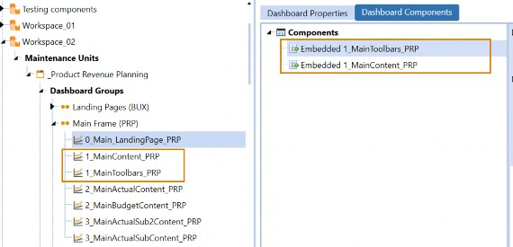
Figure 10.36
This figure shows one Dashboard made up of two other Dashboards. This is done with two Embedded Dashboard Components: 1_MainContent_PRP and 1_MainToolbars_PRP. In the design mode (Figure 10.37), we can see that these two Embedded Components make up the top and bottom.
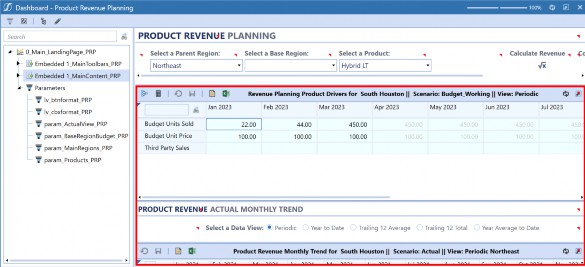
Figure 10.37
Why would you want to do this? Two key reasons could force you into this:
You are trying to create actions.
You are trying to build a complex layout with many Components.
We learned from our other Components that we sometimes have actions. These actions allow us to refresh, show, hide, or open a dialog of other Dashboards. Remember, these actions cannot be applied to our Components, only to Dashboards. One reason why you may create multiple Dashboards referencing other Dashboards is because you are trying to isolate a particular area with an action.
Another reason for Embedded Dashboard Components is to accommodate complex layouts. It’s a lot easier to get that top toolbar laid out perfectly by itself before encapsulating other items. This allows you to think of your Dashboard in digestible pieces, as opposed to one giant Dashboard juggling a lot of Components.
Dashboards › Introduction › Embedding Dashboards
How are Embedded Dashboard Components Created?
Embedded Dashboard Components are automatically created every time a Dashboard is generated. You can take advantage of them without having to do anything!
Let’s look at the properties of our Embedded Dashboard Components in Figure 10.38. The only property you really need is called Embedded Dashboard, and it will be automatically populated for you. Notice that this property is editable.
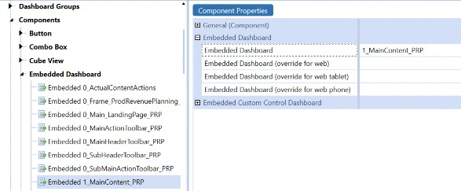
Figure 10.38
Dashboards › Introduction › Embedding Dashboards
Dashboard Naming Conventions
One of the best tips we can give you is to stay organized with the naming conventions of your Dashboards. As you may have guessed, sometimes nesting multiple Dashboards within each other can get tricky. A clear naming convention can keep your Dashboard (or, more likely, Dashboards) easy to follow.
A good naming convention pattern to stick to is one we teach in training. Figure 10.39 illustrates a simple pattern that we follow. It contains prefixes highlighting the Dashboard hierarchy, a solution code to keep this group of Dashboards organized together, and a good description that describes how each Dashboard is being used.
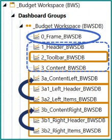
Figure 10.39
Let’s start with the prefixes. From the bottom, I can see that:
3b1_and3b2_embed into3b_3a1_and3a2_embed into3a_After that,
3a_and3b_embed into3_and so on and so forth
The prefixes are to highlight which Dashboards have nested into other Dashboards.
Notice there is also a solution code BWSDB included as a suffix. This is something our engineers employ, but I have known other Dashboard builders to adopt a similar strategy to facilitate the structure and searching of the Dashboard pieces.
The center of the naming convention tells you the placement/purpose of the Dashboard. The frame holds the final Dashboard, while the header sits across the top; the toolbar sits below that (and would likely contain my icons and combo boxes). Finally, my content resides in 3_.
Let’s look at something more complicated and highlight another key item in Figure 10.40. This shows how our solution Guided Reporting (GDR) looks behind the scenes. One of the first things that you notice is that there are multiple Dashboard Groups that contain multiple Dashboards. The final Dashboard Group is named OnePlace (GDR). The Dashboard itself has the name 0_Frame_GDR_Main_OnePlace, so there are some slight variations, but let’s see if we can break down this logic.
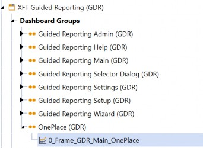
Figure 10.40
First, one of the things that the Group and the Dashboard name have in common is GDR. This is called a solution code and it indicates that these items are for Guided Reporting.
Next, notice that both the Group and the Dashboard have OnePlace in their name. This is commonly done to denote the Dashboard that is our final Dashboard and that it will reside in OnePlace. Then, this Group is the only one that gets added to the Dashboard profile and is therefore brought to the End-User. This prevents your Users from seeing all the pieces of the Dashboard that you have built.
You may adopt a similar strategy depending on how large your Dashboard has grown. However, with the release of 7.4, a new property will be making its way into Dashboards which may cause us to rethink our common practice. This is the Dashboard Type property. With this property, you can designate specific Dashboards as ‘embedded’. This will eliminate the Dashboard from OnePlace even if it resides in a Dashboard Group that was added to a Dashboard profile. Figure 10.41 shows you this new property if you want to try it out.
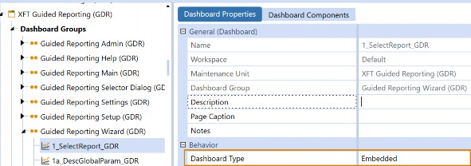
Figure 10.41
If you really want to take things to the next level, the Components that are added to the Dashboards and their parameters can also contain the codes as well as their alphanumerical prefixes. The important thing is to stay consistent so you and others can follow the Dashboard taxonomy. You will see other recommendations for naming conventions discussed in the later chapters.
Dashboards
Conclusion
This chapter is the first place where we started to dive into Dashboards. We have learned that Dashboards are a portion of OneStream that is always on the move and flexing with the latest requests from our community. We are about to undergo many fresh updates to the Dashboards page in 2023 and beyond, so be prepared for some of these items to continue to change. Rest assured, this is done to extend the capabilities of this sought-after feature in OneStream.
In this book, we are trying to give you the tools to craft the best User Experience as an Implementor or Admin in OneStream. Dashboards are often a place that people struggle to break into. In the following chapters, you are going to get a breakdown into some of the different Dashboards that you may have seen in OneStream demonstrations. If you are new to Dashboards, this chapter hopefully gave you an easy introduction and pointed out some key areas where anyone can begin their Dashboard journey.
No matter how much you learn, or how complicated a solution you are tasked with, remember that we are trying to benefit our End-Users’ lives. I am not a UI designer, so all my advice is from the perspective of someone who has had to explain items within OneStream to people who are learning. If you can’t explain it to someone, it is too complicated.
My final advice is to design a Dashboard that looks like anyone could build it. Whether it be a Report, a home page, a solution, or a Form. They can get complicated if you let them, but if you place your End-User first, you cannot go wrong. Also, think about the person who will administer and maintain the Dashboard after you are gone, even if you think that day will never come.
Cryptic!